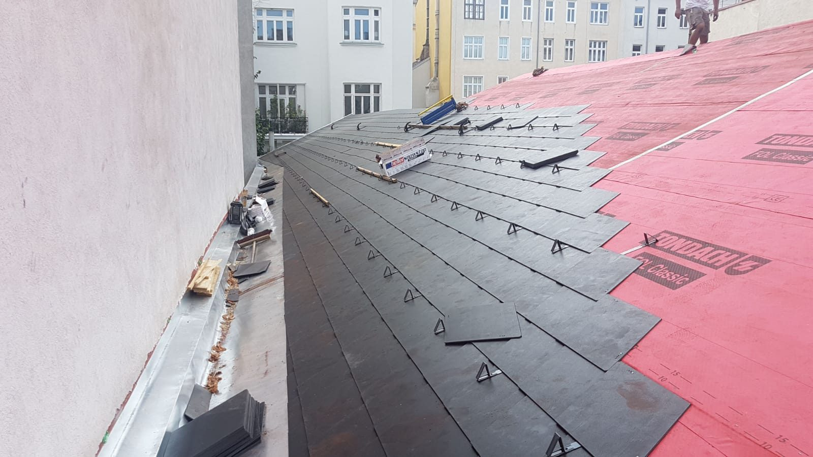
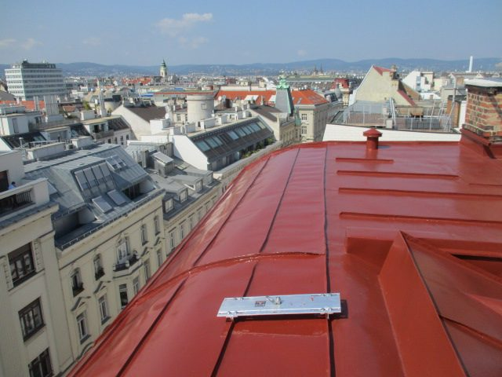
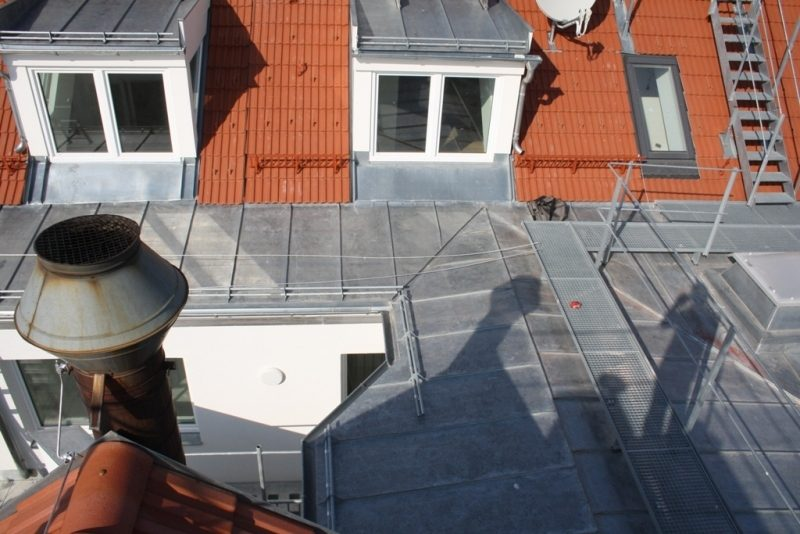
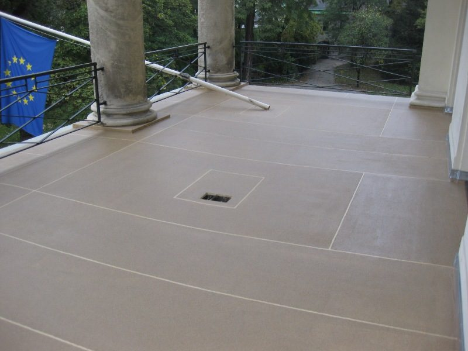
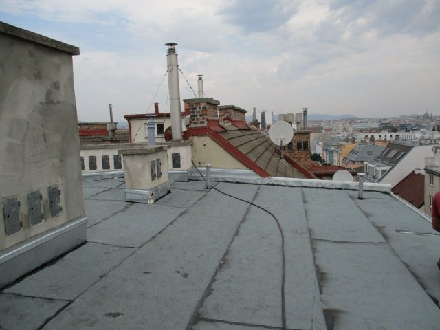

Dachdecker
Über 150 Jahre Erfahrung am Steildach – von der fachmännischen Reparatur über die umfangreiche Sanierung bis zum Neubau.
- Neueindeckung
- Reparatur
- Blechanstrich
- Dachsicherheits- und Schneeschutzsysteme
- Wartungstätigkeiten im Dachbereich
Dachdeckerei · Spenglerei · Wien
Seit 1868 deckt, repariert und saniert unser Familienbetrieb Dächer in Wien und Umgebung – heute mit 35 Mitarbeitern, eigener Technikabteilung und ausschließlich fest angestelltem Stammpersonal.
Dachdeckerei, Spenglerei, Terrassen- und Flachdachsanierung: Wir planen, decken, dichten und warten – für Hausverwaltungen, Architekten und Privatkunden in ganz Wien und Umgebung.
Über 150 Jahre Erfahrung am Steildach – von der fachmännischen Reparatur über die umfangreiche Sanierung bis zum Neubau.
Sämtliche Bauspenglerarbeiten im Dachbereich – rasch und unkompliziert, ob Reparatur oder geplantes Sanierungsvorhaben.
Terrasse oder Balkon undicht? Unsere Technikabteilung findet die Lösung, unsere Facharbeiter setzen sie fachgerecht um.
Warmdach, Umkehrdach – es gibt viele Wege, ein Flachdach zu erneuern. Wir beraten, welcher zu Ihrem Bauvorhaben passt.
Als eines der letzten Wiener Traditionsunternehmen sind wir dem Firmenstandort bis heute treu geblieben. Aus einem Betrieb mit fünf Mitarbeitern wurde durch die Ausdehnung auf Spenglerei, Schwarzdeckerei, Terrassensanierung und Kaminarbeiten ein Personalstand von fünfunddreißig.
Derzeit leitet bereits die sechste Generation den Betrieb – ein Unternehmen zwischen Ursprung und Zeitgeist, das sich den Wandel der Zeit im positiven Sinn zunutze macht.
Wir arbeiten ausschließlich mit Stammpersonal, um unseren hohen Standard zu halten. Laufende Weiterbildung sichert die Qualität der Arbeiten.

Neueindeckung – Aufnahme aus dem Bildarchiv des Betriebs.
Reparaturen und plötzlich auftretende Probleme erledigen wir prompt und zuverlässig.
Unser Tätigkeitsbereich dehnt sich über ganz Wien und Umgebung aus – von Hausverwaltungen und Architekten bis zu Privatkunden.
Wiederkehrende Wartung, Sturmschäden, Sanierungen im Bestand: ein fixer Ansprechpartner, ein Team, nachvollziehbare Abwicklung über mehrere Objekte.
Unsere Technikabteilung arbeitet die Ausführungsdetails mit – vom Aufbau des Flachdaches bis zur Anschlussausbildung der Spenglerarbeiten.
Vom einzelnen gelösten Ziegel bis zur kompletten Neueindeckung: klare Befundung, ein Angebot mit Positionen, ein Termin, eine Rechnung.
Aufnahmen aus dem Bildbestand des Betriebs: Steildach, Spenglerei, Terrasse und Flachdach. Die vollständige Projektgalerie mit Ort, Umfang und Ausführungsjahr entsteht im Live-Betrieb.




Unser Tätigkeitsbereich umfasst ganz Wien und Umgebung. Der Betriebsstandort ist seit jeher der Humboldtplatz 3 in 1100 Wien.
Ja. Neben Neueindeckungen und Sanierungen erledigen wir Reparaturen und plötzlich auftretende Probleme prompt und zuverlässig – vom Blechanstrich bis zur einzelnen Undichtheit.
Nein. Wir arbeiten ausschließlich mit unserem eigenen Stammpersonal, um den hohen Qualitätsstandard zu halten.
Warmdach oder Umkehrdach – beides hat seine Berechtigung. Als Fachunternehmen beraten wir Sie, welche Variante zu Ihrem Bauvorhaben passt, und führen die Sanierung anschließend aus.
Ja, im Zuge der Terrassen- oder Balkonsanierung ist auch die Verlegung von Holz- oder Steinbelägen möglich.